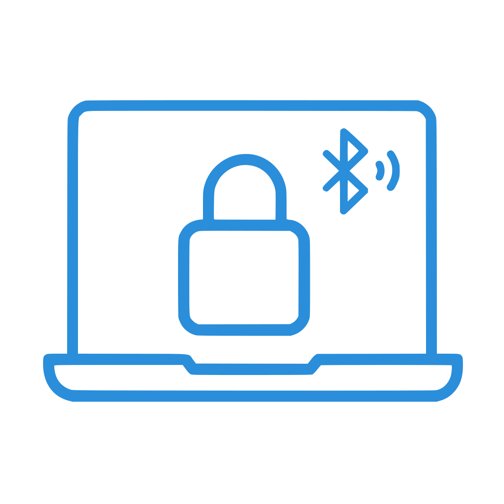

Automatic session lock for GNOME powered by Bluetooth proximity.
Git RepositoryAwayLock monitors two signals — your desktop idle time and the Bluetooth RSSI of a trusted device. When you step away and the Bluetooth signal drops below a threshold, the session locks automatically. No phone app needed, no cloud, no telemetry.
Any trusted device nearby keeps the session unlocked.
Temporary disconnects don't trigger an immediate lock.
Hysteresis prevents constant toggling at the boundary.
The extension runs inside GNOME Shell, monitors Mutter’s idle time and BlueZ device state,
and locks the session via loginctl when you step away.
The extension ships a full preferences UI (extension/prefs.js) built with GTK and libadwaita.
Configure an on/off toggle, select multiple trusted Bluetooth devices or manually enter MAC addresses,
set idle timeout and lock delay, adjust dual RSSI thresholds, smoothing window, sampling interval
and disconnect grace period — plus a live runtime status panel and a reset-to-defaults button.